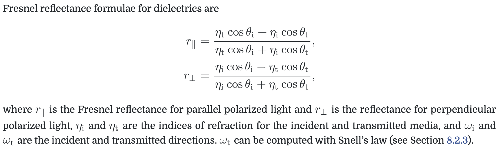
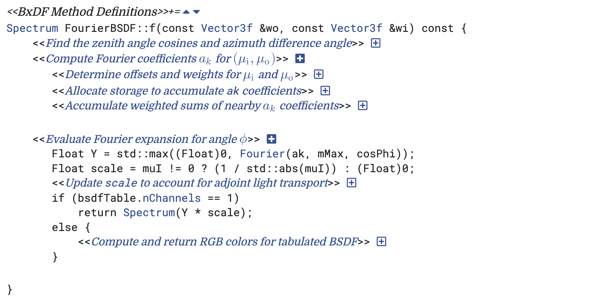

Reflection Models
- Reflection Models
reflection models
categories
specular reflection and transmission
- 镜面反射
- 遵从 Snell’s law的透射
- 理论上，the index of refraction varies with the wavelength of light (eg. 色散), 但是为了简化，忽略波长的因素
Fresnel Reflectance --- amount of reflection
Index of refraction 定义
the ratio of the speed of light in a vacuum to the speed of light in the medium.
two dielectric media
- index of refraction 
- complex index of refraction --- absorption
a conductor and a dielectric medium
semiconductors (not included)
specular reflection

specular transmission
Lambertian Reflection
models a perfect diffuse surface that scatters incident illumination equally in all directions
- const Spectrum R gives the fraction of incident light that is scattered
- BRDF f = R / pi (pi 是 cos(theta)在半球上的积分)
Microfacet Models
rough surfaces can be modeled as a collection of small microfacets
- a representation of the distribution of facets
- a BRDF that describes how light scatters from individual microfacets

Oren–Nayar Diffuse Reflection
main thoughts
- real-world objects do not exhibit perfect Lambertian reflection
- describes rough surfaces by V-shaped microfacets described by a spherical Gaussian distribution with a single parameter theta, the standard deviation of the microfacet orientation angle.
model
Normal Distribution Function
Masking and Shadowing
Smith masking-shadowing function G_1(w, w_h)

Beckmann–Spizzichino distribution
- assume that there is no correlation between the heights of nearby points on the microsurface
- function

- a rational polynomial approximation
Trowbridge–Reitz distribution

{kind=link}
{kind=link}
{kind=link}
{kind=link}
{kind=link}
{kind=link}
{kind=link}
{kind=link}
{kind=link}
{kind=link}
{kind=link}
{kind=link}
{kind=link}
{kind=link}
{kind=link}
{kind=link}
{kind=link}
{kind=link}
{kind=link}
{kind=link}
{kind=link}
{kind=link}
{kind=link}
{kind=link}
{kind=link}
{kind=link}
{kind=link}
both direction geometry function G(w_o, w_i)
independently for w_o, w_i
{kind=link}
dependently
microfacet visibility is more likely the higher up a given point on a microfacet is
{kind=link}
The Torrance–Sparrow Model
basic thoughts
modeled surfaces as collections of perfectly smooth mirrored microfacets only consider the half vector.
{kind=link}
Torrance–Sparrow BRDF
{kind=link}
Torrance-Sparrow BRTF
{kind=link}
Fresnel Incidence Effects
basic principle
这个关心的是上一层材质的Fresnel reflection是如何影响下一层材质的入射光照的。 Fresnel reflection reduces the amount of light that reaches the bottom level of layered objects.
{kind=link}
Ashikhmin and Shirley model
models a diffuse underlying surface with a glossy specular surface above it.
glossy specular term
{kind=link}
{kind=link}
diffuse term
R_d diffuse surface reflectance, R_s specular surface reflectance
{kind=link}
FourierBSDF
objective
一些复杂的材质很难用一个通用BXDF公式去描述。 一种思路是存a large 3D or 4D lookup table，但是这样数据量会太大。 想要寻求的是a more compact representation that still represents the BSDF accurately， FourierBSDF就是这样的一个解决方案。 核心思想是sums of scaled cosine terms using the Fourier basis.
represents isotropic BSDFs
{kind=link}
specified BSDF value

找到临近的离散值，做一定的插值得到Fourier系数，然后计算BSDF值。

{kind=link}
{kind=link}
{kind=link}
{kind=link}
{kind=link}
{kind=link}